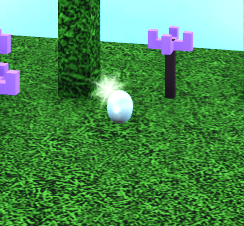
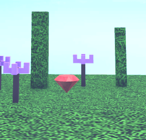
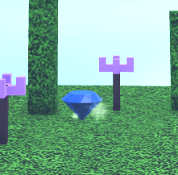
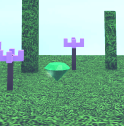
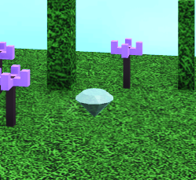
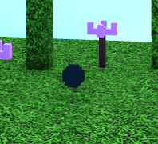

Enchant
Os encantamentos são itens que podem ser encontrados pelo mapa e utilizados para adicionar um efeito com uma chance de ativação a cada ataque.
Pedras de enchant
Existem diversos tipos de pedras de encantamento. Para saber mais, leia a lista abaixo.
-
Opal – Causa 1,25x mais dano contra Vampiros, Shriekers e Zscrooms, remove os buffs de vampirismo no proc.
 -
Ruby – Encantamento de fogo, Deixa os jogadores pegando fogo no proc. Devastador se usado em Vampiros.
 -
Sapphire - Encantamento de gelo, retarda progressivamente o movimento do alvo no proc.
 -
Emerald – Encantamento de veneno, envenena jogadores no proc. O veneno causa dano porcentual baixo
 -
Diamond - Encantamento relâmpago, atordoa os jogadores no proc (aproximadamente 2x o atordoamento de um golpe normal). Atualmente bugado e não processa. Não entenda esse encantamento.
 -
Nightstone - 100% de chance de proc que causa cegueira distorcida momentaneamente.

Notas
- Os encantamentos custam 100 silver para o ferreiro em Oresfall.
- O atordoamento do encantamento de diamante é muito ruim, o encantamento está quebrado então se quiser ganhar no pvp não use diamante
- Se você utilizar armas com a propriedade soulbound, será possível manter o encantamento de forma permanente.
- Caso você esteja se perguntando, não tem como fumar essas pedras de enchant. >:C